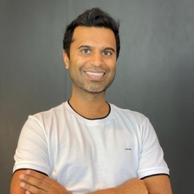

Hello there!
I'm Ravi, also known as project-delphi. I'm an applied machine learning scientist who turns research into products. I've built and deployed ML systems across Generative AI, Computer Vision, NLP, Proteomics and Cloud Computing, and they've delivered real value to the businesses that use them.
I speak internationally on modern functional programming and good practices for scientific software. I do my best work in collaborative teams, working closely with developers to bring projects to life.
Interested in connecting? Reach out on LinkedIn or send me an email. I'm always happy to chat!
Writing
Publications & Reports
- Fine tuning AAV: machine learning the capsid Journal article
- Ordinal classification via Support Vector Machines applied to Soccer outcomes and assessed by gambling strategies Doctoral thesis
- Assessing Classifier Performance by Gambling Strategies Paper + code
- Progress in implementing the RankingSVM algorithm Report + code
- Modern Pattern Recognition Methods for Ordered Classes Technical report
Talks
@ Tech Conferences
-
Lightning Talk: Natural Language to Complex SQL within grasp
November 2019, Toronto: PyCon Canada
-
Invited Speaker: ML in Production
September 2019, Montreal: PyData
-
Lightning Talk: Machine Learning Supervising TDD
August 2019, Montreal: Software Crafters
-
Invited Speaker: Introduction to Machine Learning (video, talk starts at 12:00)
April 2019, Mexico City: Google Developer Group
-
Invited Speaker: Building Financial Services on top of a Blockchain Network
October 2018, Monterrey, Mexico: Viva La Crypto Festival
@ Academic Meetups
-
Invited Speaker: Anomaly Detection using Clustering and Density Estimation
May 2019, Mexico City: National Polytechnic Institute, IPN
-
Invited Speaker: Assessing Predictive Probabilities
October 2016, Victoria, Canada: University of Victoria
-
Invited Speaker: Sports Betting in Asia
February 2015, Manila: University of the Philippines, Manila
-
Invited Speaker: Markov Decision Processes
April 2012, Kingston, Ontario: Queen's University